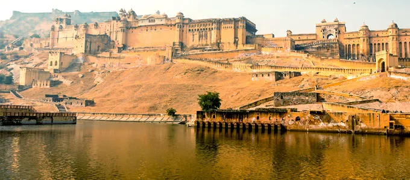
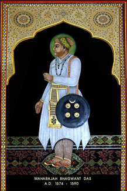
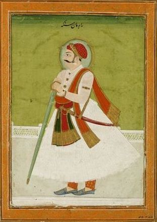
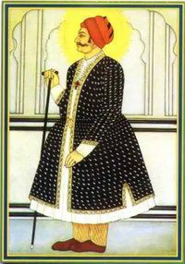
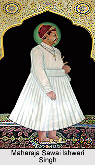
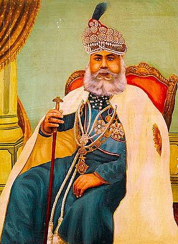
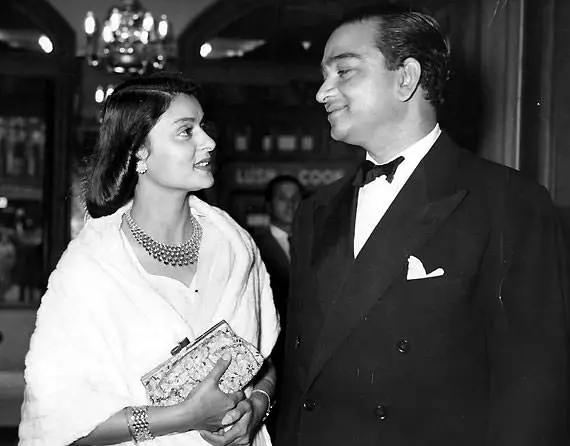

The Founders of Jaipur
Mostly the rulers of the city are known as the Kachchwaha rulers and they were established in the city during the 11th century and ruled for more than few decades and that is why they have established many temples, forts, palaces, Havelis as their official and prominent residences and the tourists who visit here will find them in a nostalgic aura where the kings and the queens used to stay.

History of Jaipur Royal Family
Raja Bhagwan Das (1574-1589 AD.)
He was
the son
of Raja Bharmal Kachchwaha of Amber and was a great warrior who fought many battles of Gujarat,
Punjab,
and northern frontier.
He was appointed as Governor of Punjab and was generously known for its courage and warrior
ship.


Maharaja Man Singh I (1589-1614)
He was
the son
of Raja Bhagwan Das and was the prince of Amber. Man Singh was very brave and was energetic in
learning
fighting and battling skills.
He got a huge success in Bengal, Orissa, and Assam during the ruling era of Akbar and battled
successfully with the
tribal chiefs of Afghanistan and this winning was followed by an appointment in the Mughal Army
as a
commander in Chief
to look after the North-western frontier, of, Afghanistan Punjab, Kashmir including the
North-eastern
states of India
counting Bengal, Bihar, Orissa, Assam to crush the defiant in the reign of Akbar.
Jai Singh I(1621-67 AD.)
Jai
Singh, I
was born to Maha Singh the Raja of Garha and was moved up to the throne of Amber at the age
of ten.
He was a great warrior and won many battles during the reign of three Mughal Kings i.e.
Jehangir,
Shahjahan, and
Aurangzeb individually and he got huge success against Shivaji during the reign of Aurangzeb.
He leads as a great leader in the Mughal Army that included the Rajputs, Afghans, and Mughals.


Maharaja Sawai Jai Singh II
According to
the history of Jaipur, he was the founder of the city and was born to Maharaja Bishan Singh
of Amber.
During the reign of Mughal Emperor Aurangzeb, he fought the battles of Khelna, Panhala and other
areas
in the Deccan and
seeing his gallantry the emperor gifted him the title of “Sawai”.
He also fought with Bahadur Shah Zafar who resumed Amber into a Mughal Territory and Jai Singh
along
with Ajit Singh of
Jodhpur fought against the Mughal emperor and recovered the state in the year 1710.
In the year 1727, he laid the foundation stone of the Chandra Mahal complex of the City Palace,
Madho
Vilas in the
center of Jai Mahal, and the Sisodia Rani ka Bagh and many other beautiful temples too.
Maharaja Sawai Ishwari Singh (1743-1750 A. D.)
He was
the
eldest son of Jai Singh II but was not an as great warrior like his father and he died
quickly but was a
great artist, poet and involved in classical music and dance.
He built many palaces that includeMadhoNiwas in the Chandra Mahal complex of the City Palace,
Madho
Vilas in the center
of Jai Mahal, and the Sisodia Rani ka Bagh and many other beautiful temples too.


Maharaja Sawai Madho Singh I (1751-1768 A.D.)
He was
the younger son of Jai Singh II and captured the throne just after the demise of his elder
brother and he unfettered the Kachchwaha Kingdom from the Marathas and won many other important
battles.
He built many palaces that includeMadhoNiwas in the Chandra Mahal complex of the City Palace,
Madho
Vilas in the center
of Jai Mahal, and the Sisodia Rani ka Bagh and many other beautiful temples too.
Maharaja Sawai Madho Singh II(1880-1922 A.D.)
Madho
Singh
II
was the adopted son of Ram Singh II, Raja of Jaipur. He was a very good king and
deliberately invested in
sanitation and education in the city. He captured the throne at the age of 19 and ruled as
successful
rulers and an
administrator.
The king made Jaipur as a planned city and his various contributions made good earnings for the
state of
Rajasthan and
he donated 25 lacs rupees to provide funding to a noble cause for the most natural disasters in
the
country- All India
Famine Relief Fund.
And after that, there were many irrigation projects took place by his ancestors and they were
completed
and many of them
were done by his own creativity and contributed near about 224 irrigation dams with distribution
canals
so that eh state
do not face any problems in farming and also can get help during drought.


Maharaja Sawai Man Singh II (1911-1970 A.D.)
He was
the
second son of Thakur SawaiSinghji and was considered as one of the best kings of the history
of the Jaipur
royal family.
Maharaja Sawai Madho Singh II adopted him as his crown prince and was put on the throne as the
king
in
the year 1922.
Maharaja Sawai Man Singh II tried to regroup the Army of Jaipur and his effort resulted in a
division of
two additional
battalions of Jaipur Forces which were later accepted by the Government of India as Indian State
Forces
Units.
Maharaja Sawai Bhawani Singh (1931 – 2011 A.D.)
He was
the
eldest son of Sawai Man Singh II and was a studious person since childhood.
Sawai Bhawani Singh was hired by the Indian Army in the 3rd Cavalry Regiment as a Second
Lieutenant
in
the year 1951 and
later in the year 1954, he was designated as the President’s Bodyguard.
He had a great contribution in the Indo-Pak war that happened in the year 1971 and was awarded
the
second-highest
gallantry award “Mahavir Chakra”.